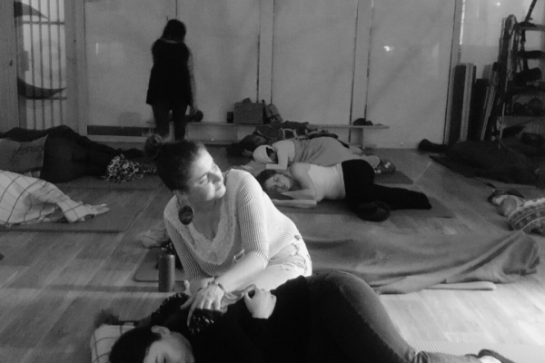
Despre TRE®
TRE® sau Exercițiile de Eliberare a Traumei și Tensiunii sunt o practică somatică, bazată pe corp, pentru oricine suferă de stres, anxietate, traumă sau PTSD.
Află mai mult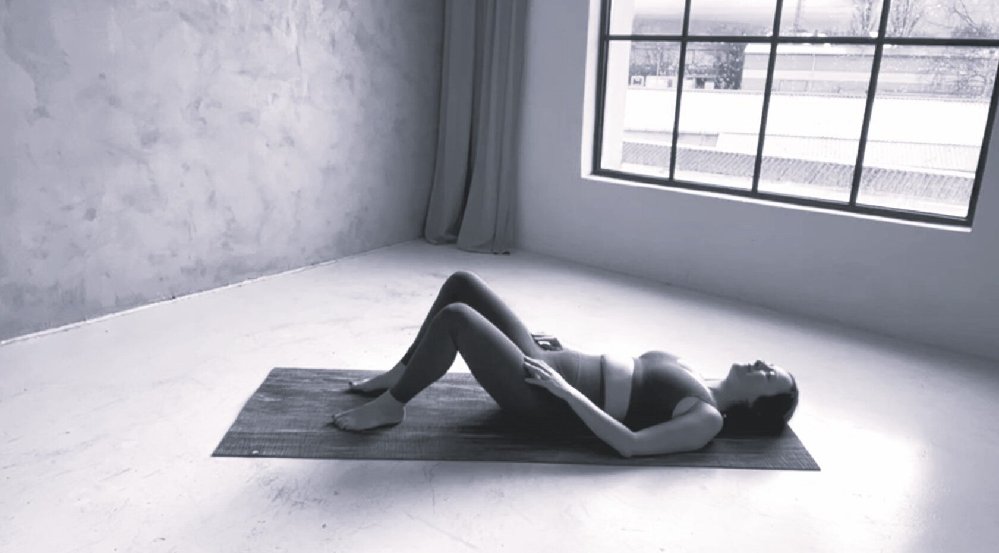
TRE® — Exercițiile de Eliberare a Traumei și Tensiunii — activează mecanismul natural de tremur al corpului, care eliberează tiparele musculare profunde de stres și calmează sistemul nervos.

TRE® sau Exercițiile de Eliberare a Traumei și Tensiunii sunt o practică somatică, bazată pe corp, pentru oricine suferă de stres, anxietate, traumă sau PTSD.
Află mai mult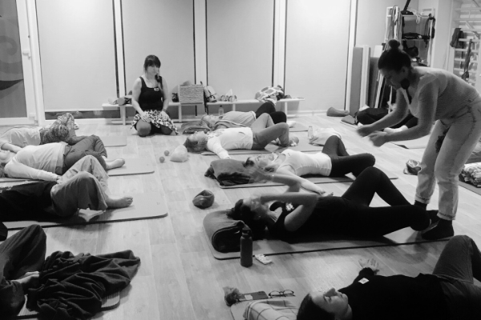
Odată învățate și reglate, exercițiile TRE® se recomandă a fi practicate de câteva ori pe săptămână ca instrument de auto-ajutor, reziliență și eliberare de stres.
Află mai mult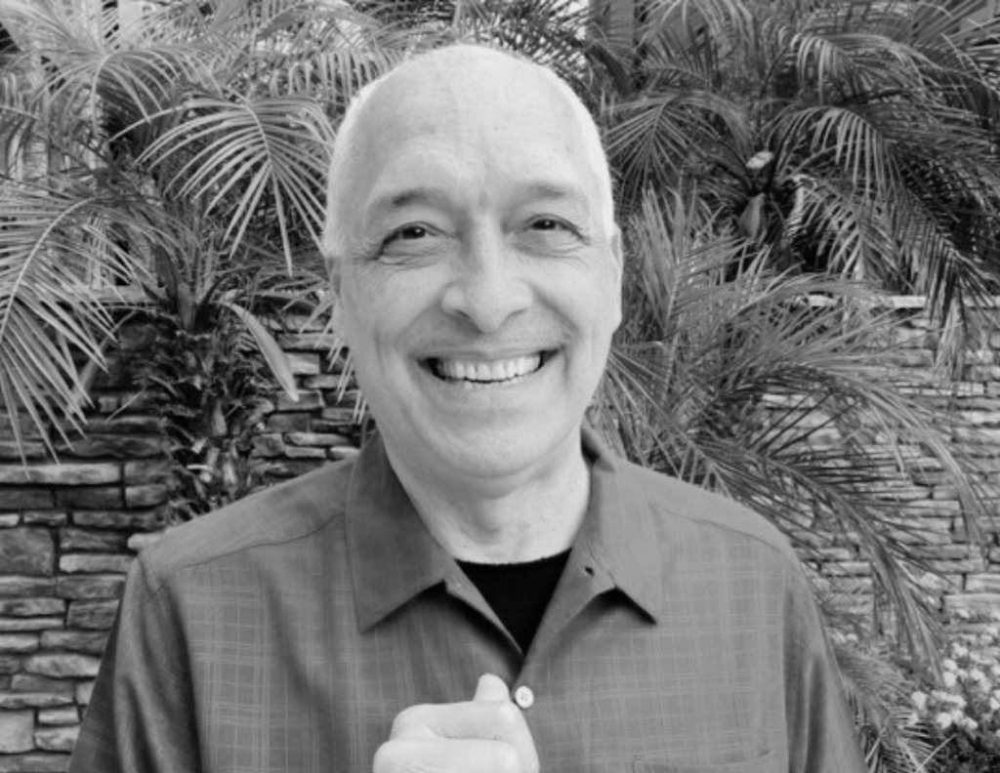
Dr. David Berceli este creatorul seriei unice și inovatoare de TRE® — Exerciții de Eliberare a Traumei, care ajută corpul să elibereze tiparele musculare profunde de stres, tensiune și traumă.
Află mai mult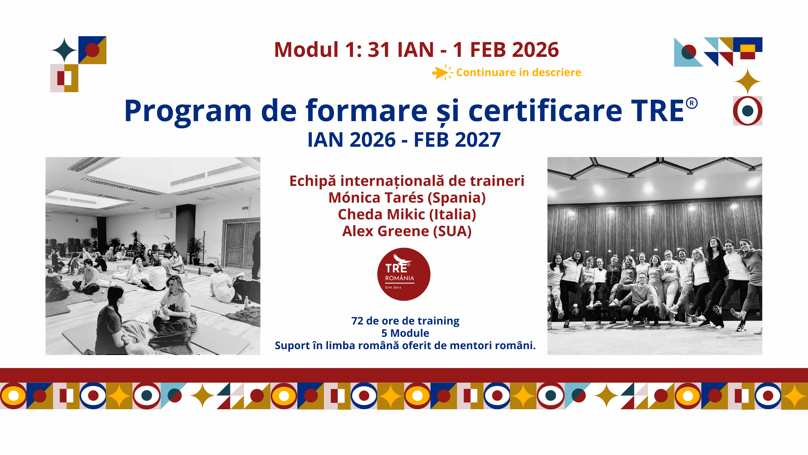
Devino facilitator TRE® certificat, alături de o echipă internațională de traineri. Modulele încep în ianuarie 2026 — pregătirea combină întâlniri față în față la București cu sesiuni online.
Workshopuri, sesiuni demo și programe somatice, în București și online.
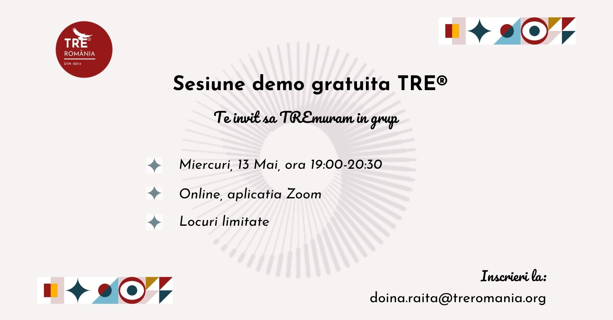
Fă cunoștință cu TRE® într-o sesiune demonstrativă gratuită, ghidată de un facilitator certificat.
Detalii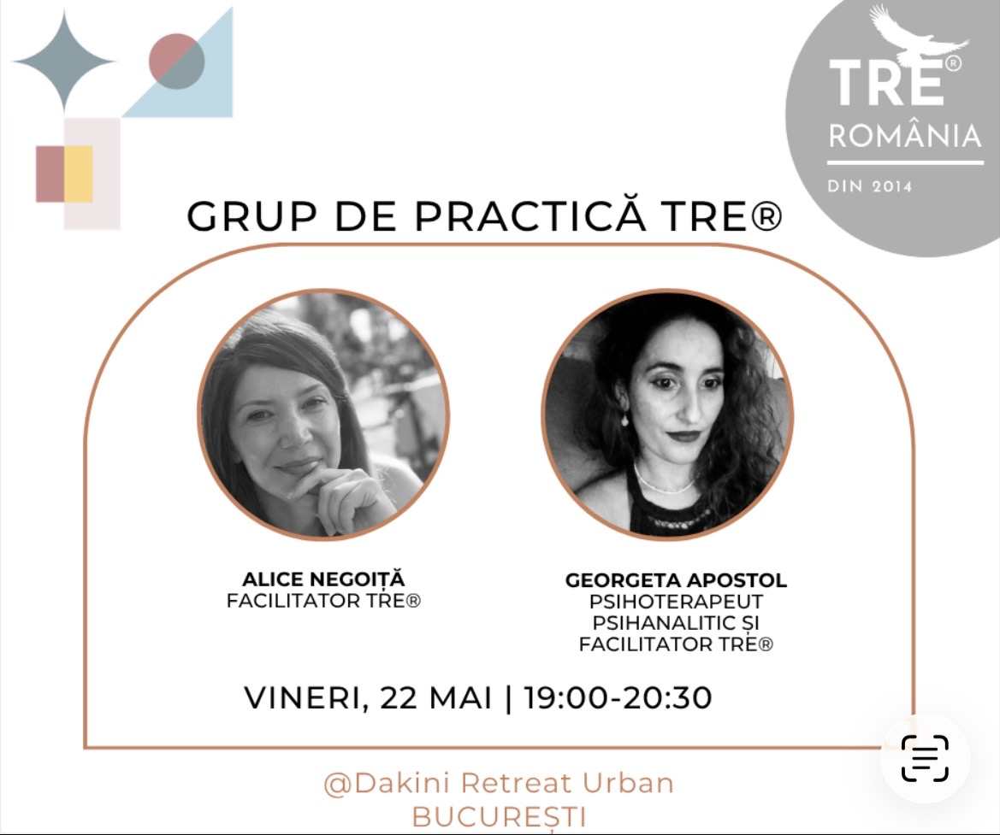
Grup de practică TRE® cu Alice Negoiță și Georgeta Apostol, în zona Piața Victoriei.
Detalii
O nouă întâlnire a grupului de practică TRE® — eliberare, conectare și reglare a sistemului nervos.
DetaliiPractica TRE este pentru mine acel ceva care îmi „golește paharul", astfel încât să nu mai dea pe dinafară la fiecare ceartă dintre copii. Este gura de aer care îmi dă putere să fiu mama care tot visez să fiu.
TRE a fost pentru mine ceva neașteptat de spectaculos. A început cu niște mișcări extrem de simple și banale pentru ca mai apoi să îmi producă conștientizări spontane și momente de extaz cu râs necontrolat. A fost pentru prima dată, după numeroase terapii și practici de meditație, când am simțit că absolut nimic nu este în neregulă. „Totul este exact așa cum trebuie să fie și nimeni nu mi-a greșit vreodată cu nimic." Asta am realizat fără cuvinte și explicații, doar într-o sesiune de TRE. O fi ceva acolo... 😉
Am învățat să mă conectez mai ușor la semnalele subtile ale corpului meu, să-mi aprofundez intuiția, să identific rapid când ceva nu se aliniază cu valorile mele. Am câștigat puterea de a spune „NU" fără să mă îndoiesc de mine, iar asta a venit alături de conștientizarea că încrederea în mine a crescut semnificativ. Procesul meu de TRE® mă ajută să-mi reglez sistemul nervos și pot descărca stresul acumulat de peste zi — mă ajută să petrec timp cu mine și timp de calitate cu familia mea.
TRE® a venit în viața mea cu foarte multe completări și aha-uri la tot ce am învățat până acum. Este procesul în care am dat voie corpului să se miște exact cum are el nevoie, fără intruziunea sau controlul minții. Cu și prin TRE® am învățat cu adevărat ce înseamnă să devin un simplu observator, jucăuș și conținător al propriului corp. După aproape 3 ani de lucru personal prin TRE® mi-am dat voie să aduc împreună cele două fațete ale mele — programatoarea și terapeutul somatic — și să creez cu adevărat magie!
TRE® este practica prin care mi-am văzut pentru prima oară corpul. Un fel de Veni, Vidi, Vici. Odată văzut corpul, mi-a fost mai ușor să intru în conexiune cu el, să îl ascult, să îl onorez și să încep să mă îndrăgostesc de el. Somnul s-a reglat, am început să pun limite mai sănătoase, iar gândurile de judecată s-au rărit. Recomand cu căldură și curiozitate explorarea corpului — trup, minte, spirit, and the sky is the limit!
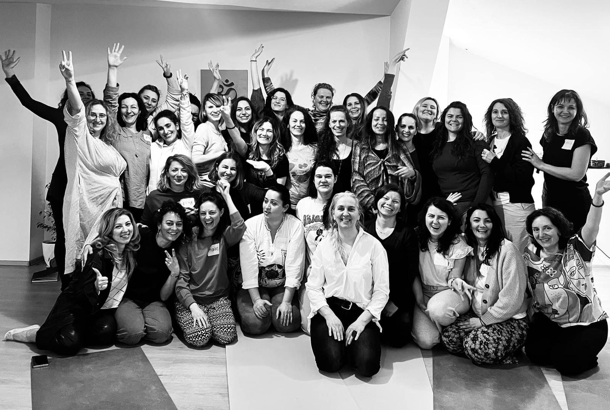
În spatele asociației stă o comunitate de facilitatori certificați, practicanți în formare și susținători ai metodei TRE® din toată România. Ne întâlnim la workshopuri, grupuri de practică și programe de formare — față în față și online.
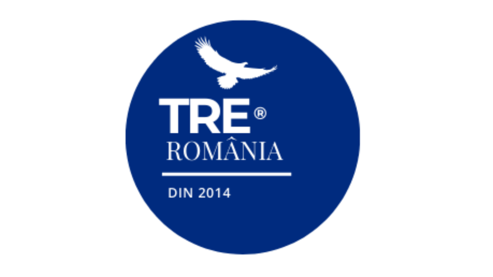
2024 — un an important pentru TRE® România. După provocările pandemiei, mutarea cursurilor online și relansarea asociației...
Citește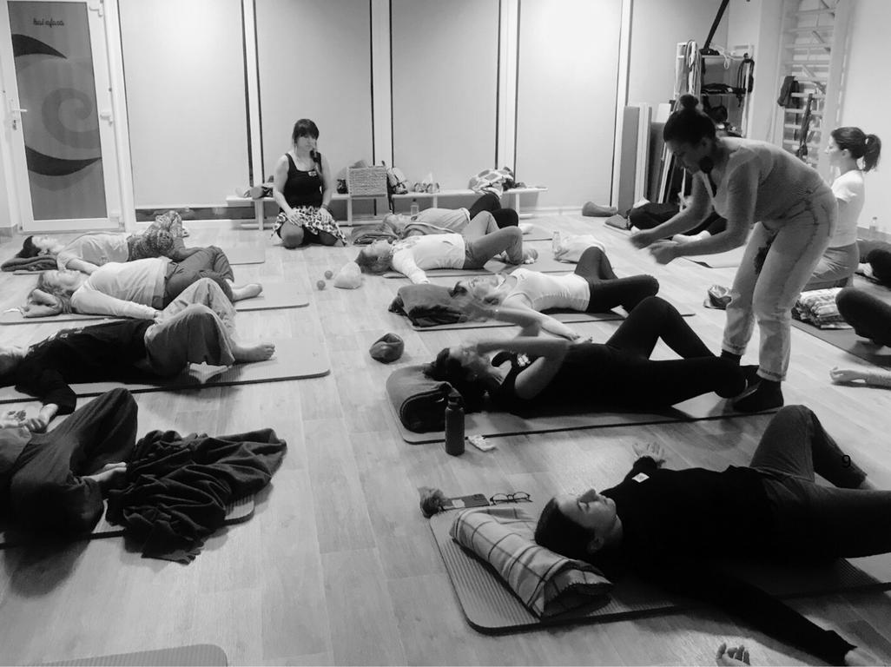
TRE® reprezintă o suită de exerciții de întindere (stretching) ce au ca scop să scoată ușor și blând din corp tensiunea acumulată...
Citește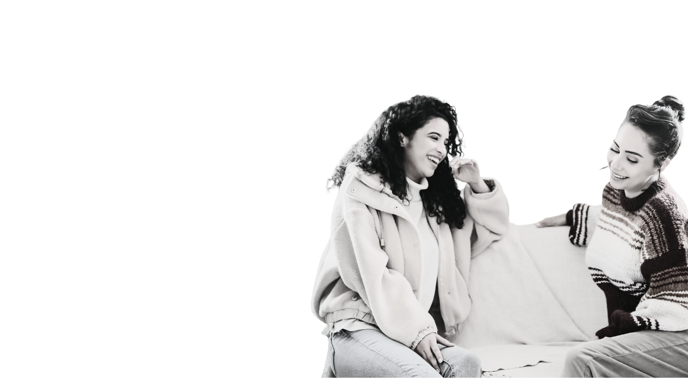
Viața aduce cu ea o mulțime de provocări și schimbări, iar felul în care ne adaptăm la acestea poate face diferența...
CiteșteDacă ești deja familiar cu această metodă, practicant în formare sau facilitator certificat și dorești să participi activ la dezvoltarea TRE® în România, alătură-te comunității noastre și devino membru!
Rămâi conectat la comunitate și fii primul care află ultimele noutăți.